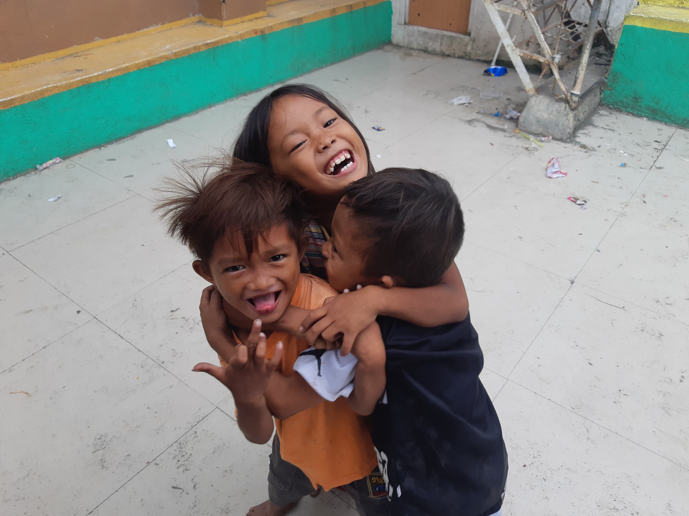

Background of the Project
Problem Statement/Identification

According to the Badjao Community, the issue that they currently face that affects their institution is the unattainability of basic necessities such as food, medicine, and school supplies for the children. This has been a prominent issue ever since the pandemic took place and faced multiple financial problems and issues. The attainability of basic necessities is a must in institutions as this is essential for one’s survival and without it, it will greatly affect the benefactors’ and beneficiaries’ health. Without this factor, they will most likely be at risk. Therefore, this issue that the institution is currently facing–the unattainability of basic necessities–should be addressed as soon as possible.
Problem Description
Basic necessities are essential and a must-have in life, without them, humans aren’t able to carry out daily activities and tend to their health and well-being. Due to the lockdown taking place during the pandemic, the Badjaos were left with no other choice but to sell their businesses in order to fill their stomachs and survive in this harsh environment. We need to consider that the Badjao Community specializes in conducting different livelihood and literacy programs for all ages and the lack of basic necessities such as school supplies, in this case, these items are a must to continue these important programs. Knowing this information, due to the lack of basic necessities, it will be difficult for the institution to maintain these programs which are essential to the lives of the Badjaos as they are taught important life lessons and somewhat receive education. Therefore, our project team aims and desires for the institution to continue its services and assistance to the Badjaos in need without much difficulty in aspects such as finance.
Background
The identified problem, financial issues have long existed ever since the Covid-19 lockdown occurred globally. Generally speaking, it was a difficult and harsh experience for all of us; people lost their jobs, businesses, and income; arose with financial problems amidst this period of survival wherein everyone was fending for themselves. This is exactly what the Badjao Community experienced. According to The Philippine Statistics Authority(PSA), during April 2020 more than 7.3 million or 17.7 Filipinos became unemployed; as of July 2020, 4.6 million or 10 percent unemployment rate was recorded. As mentioned in the previous item, the Badjao Community focuses on and implements literacy programs, health, and family planning for adults and children alike. Through providing their needed basic needs through our Ayuda Offering Project they’ll be able to continue their kind and heartful services to the Badjaos without worrying about the lack of supplies such as school supplies for the literacy programs and basic survival needs(food, medicine) for health and family planning.
The Intervention
Proposed Project

The specific intervention that we intend to propose to address the problem the “Badjao Community” is facing, we opt to conduct an Ayuda Offering. Although this isn’t final as we are yet to find out more information and addressable aspects in our partner institution, we believe this is the best course of action so far. You may wonder what is this Ayuda Offering. To answer that question, we opt to give away food, clothes, and other basic needs to the institution’s members as we have identified previously, a lot of the members of the Badjao Community got affected by the pandemic in ways that they had to sell their businesses just to afford basic necessities. In order to attain funds to purchase the needed materials in order to make this intervention possible is that we can use our savings or sell pre-loved or food items in order to gain funds. The short-term effect of this proposal is that if we give away food, it is just temporary as it will run out eventually. On the other hand, its long-term effects would be, as school supplies are part of the items we plan to give away it’ll help with the Badjao’s education especially children who are still going to school.
Our Solution

The problem described will be solved through our proposed project, the Ayuda Offering, we opt to give away food, clothes, and other basic needs to different families and individuals in the institution. This proposed solution will be effective as we’ll be catering to the basic survival needs the Badjao Community is lacking and unable to attain. To put emphasis on “basic survival needs”, these are the items that are essential and a must-have in life, without them, humans aren’t able to carry out daily activities and tend to their health and well-being; through this project provides a good quality of life to the Badjaos can be done efficiently and effectively. We believe that this proposed solution, Ayuda Offering Project, is better than other alternatives because as students who are still in high school, this is the most doable and achievable, there are some limitations to other alternatives due to our status as students who are still entirely dependent to our parents. Furthermore, this project takes into consideration the items and conditions the institution needs the most at the moment. By filling the gap the institution lacks to operate to its full potential we are able to help them maintain the different programs, planning, and cultural heritage they promote as a community. To make this happen, we need to gather and obtain the needed resources and materials such as the items to be offered or given away, and the bags that’ll be used to organize everything; this alone would of course cost money. Due to this, we opt to use our savings in order to afford funds aside from this teamwork and cooperation with each other are necessary.
The Significance of the Project
a. Why is the project important for the institution?
The said project is important for the institution as it will certainly cater to the unmet needs and the issue they are currently suffering from. This issue affects and hinders their way of living and thus needed to be addressed as soon as possible and efficiently to ensure that this issue doesn’t affect them any worse. In this way, they are able to go on and live their lives comfortably without any hindrance.
b. Why is the project important for the Ateneo students?
For the Ateneo Students, this project is important because it benefits them spiritually in the manner that the students become more socially aware and open to the problems that the marginalized sector of society faces; overall being compassionate and generous. This encourages them to exert their efforts into assisting those in need in our community. Furthermore, this enables them to learn and attain valuable life lessons that they can apply to their daily lives.
c. Why is the project important for the public in general?
The project is important for the public in general as this allows the problem of the “Badjao Community” to be more recognized and given attention. In this way, a lot more people are encouraged to lend a helping hand; as a result, we can definitely give light on the problem and issues of the partner institution. Somewhat like the phrase “the more the merrier”. This will also help us and other fellow students with whatever project we plan to propose.
Rationale
The project is essential since it will provide health and sustenance to the Badjaos of the Badjao Community by catering to the basic survival needs the Institution lacks and is unable to attain. To put emphasis on “basic survival needs”, these are the items that are essential and a must-have in life, without them, humans aren’t able to carry out daily activities and tend to their health and well-being; through this project provides a good quality of life to the Badjaos can be done efficiently and effectively.
Project Objectives
The main goal of our project is to solve the problem of the scarcity in the Badjao Community institution through Ayuda Offering; units of packages filled with food, school supplies, etc. The specific objectives of the project are the following:
➼ To utilize online seminars and forums to inform the institution about our proposed project. ➼ To provide supplies that would satisfy and sustain the needs of the Institution. ➼ To retain the services; literacy and livelihood programs of the Institution to the Badjaos without the ㅤㅤdisturbance of other arising issues. ➼ To promote hygiene and sanitation through distributing the said Ayuda efficiently. ➼ To create a comfortable environment between the working team and Institution.